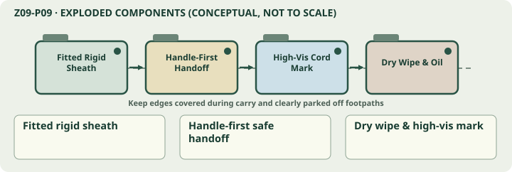

Z09-P09 · Tools and construction · New manuscript
Keep sharp tools sheathed, visible and dry during camp carry
Prevent accidental stabs, lost tools and edge corrosion while traveling or setting down tools at camp.
When it applies · Carrying knives, saws, hatchets and shears in packs, on belts or around shared campsites.
Equipment · Fitted blade sheath or guard, high-visibility lanyard/tape marker and dry wipe cloth.

Actions
- Keep every fixed blade, axe head and saw blade fully sheathed or folded locked whenever walking, climbing over logs or setting the tool down between cuts.[K03, K02]
- Never carry an unsheathed knife in a hand while stepping over slick roots, never stick blades loosely into camp soil or live trees and hand tools to companions handle-first with blade guarded.[K03, K11, ED]
- Mark dark tool handles with bright cord or tape and wipe blades dry after rain or sap contact so tools stay visible in leaf litter and free of pitting rust.[K04, K03, ED]
Failure recognition · Laying an open knife on forest leaves beside a pack where a companion kneels onto the blade, or walking with an uncovered hatchet over icy roots.[K03, K02]
Verify · Confirm secure sheath retention, dry blade storage and a consistent visible camp tool-parking spot off the walking lane.[K03, K04, ED]
Stop or change course · Halt camp movement until dropped or misplaced sharp tools are located and safely sheathed.[K03, ED]
Evidence and editorial notes
- K02 · OSHA · Hand and Power Tools (OSHA 3080) (agency PDF)
- Section: Hand Tools > Knives, Chisels, Impact and Wrenches · Conditions: Manual cutting, striking and prying operations
Support: Direct cutting blades away from the body and bystanders, never use cracked wooden handles or mushroomed striking heads, and do not substitute wrenches or blades as pry bars.
Limitations: Does not specify material tensile ratings for improvised handles. · Conflicting evidence: None; directly informs safe cutting and impact-tool failure cards.
Editorial note: Prevents blade slip, splintered-handle and spalling-metal injuries. · Specialist reviewer: Tool safety and wilderness medicine
Primary source · checked 2026-11-24
Current assessment · A04-K02 (2026-11-25) · Open: support partial or missing (A04): Supports misuse and defective equipment limits in occupational work. Exact cutting lane and equipment guidance varies by tool kept under specialist review. Limits: Specialist review PENDING (Tool safety and wilderness medicine); publication HOLD. All release decisions pending. - K03 · USDA Forest Service · Handtools for Trail Work (0523-2810-MTDC) (agency handbook)
- Section: Tool Selection, Inspection and Safe Transport · Conditions: Trail and campsite hand tools (axes, saws, shovels, pulaskis, wedges)
Support: Inspect handles for splits, loose heads and secure wedges before every use; sheath sharp edges during carry and maintain a clear work circle around swinging tools.
Limitations: Forestry guidelines apply to maintained commercial tools; improvised stone or salvaged blades carry higher failure risk. · Conflicting evidence: None; aligns with OSHA-3080.
Editorial note: Grounds woodworking, swinging-tool clearance, carrying and maintenance cards. · Specialist reviewer: Forestry tool safety and trail maintenance
Primary source · checked 2026-11-24 - K04 · USDA Forest Service · Handtools for Trail Work (0523-2810-MTDC) (agency handbook)
- Section: Sharpening, Filing and Handle Maintenance · Conditions: Maintaining cutting edges and wood tool handles in field or shop
Support: Secure the tool firmly before filing or honing, keep fingers behind file guards, preserve factory bevel geometry without overheating steel and replace loose or cracked handles rather than taping them.
Limitations: Field touch-up honing does not correct chipped, cracked or heat-annealed steel blades. · Conflicting evidence: None; separates routine edge maintenance from unsafe handle patching.
Editorial note: Guides sharpening, rust prevention and handle-failure retirement cards. · Specialist reviewer: Tool maintenance and forestry safety
Primary source · checked 2026-11-24 - K11 · NPS · Leave No Trace Seven Principles (current web edition)
- Section: Principle 2 and 5 > Low-Impact Construction and Material Use · Conditions: Temporary camp craft and emergency construction on public lands
Support: Avoid cutting live saplings, nailing into live trees or building permanent structures on public lands; dismantle temporary non-destructive lashings and leave natural features intact.
Limitations: Life-safety emergencies differ from routine camp practice but still require hazard-free builds. · Conflicting evidence: Restricts destructive bushcraft construction in routine recreation.
Editorial note: Distinguishes lawful low-impact knots/lashings from destructive camp building. · Specialist reviewer: Land management and wilderness ethics
Primary source · checked 2026-11-24
Source lineage · USFS trail handtools and OSHA 3080; new manuscript · Classification · New manuscript.